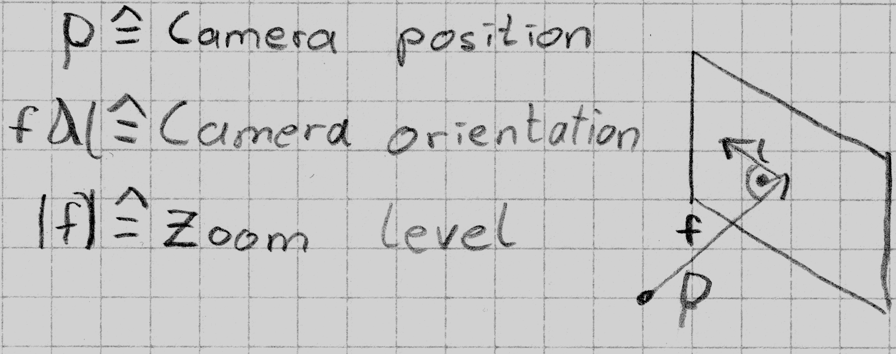
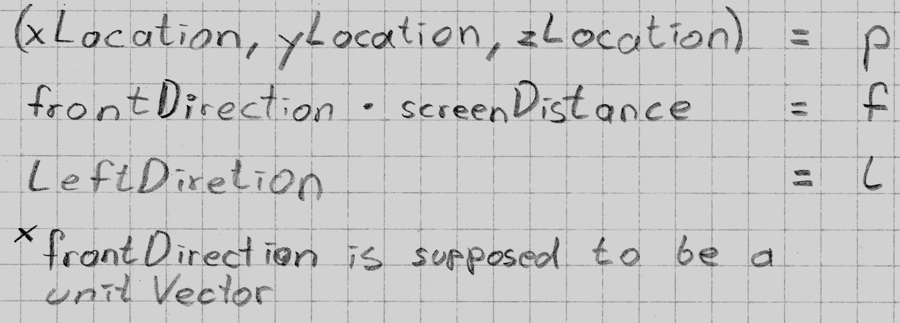
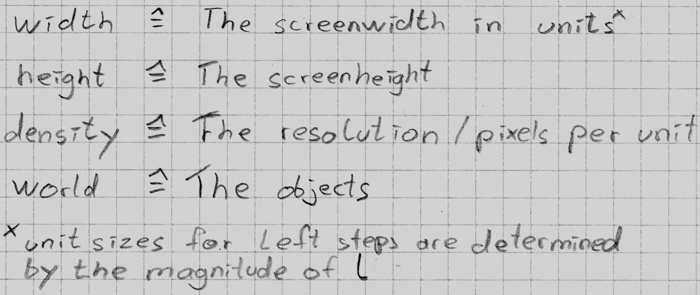

I'd like to think of a computer as a window, a window to another dimension. So the way I'm approaching a Camera is by modeling the Components of somebody watching out the window. For this purpose you must specify a position for the guy, the directin and rotation, he's looking in and the window he is currently starring at together with the distance he's standing away from it. The two additional Things are the density, which is just a poor naming for resolution, and world which are the 3DObjects our little fellow's looking at.
For your pleasant here are some short reminders. With some further detail
 